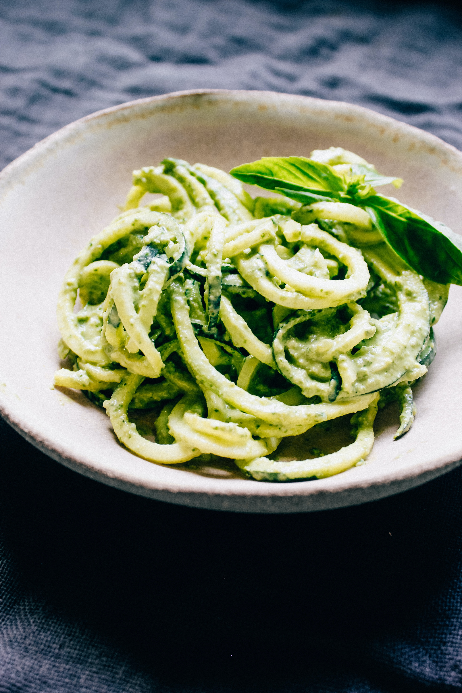

Pesto Pasta

Pesto pasta with plenty of PESTO!
Anyone can make a Pesto Pasta,
but not everyone knows how to
make a pesto pasta that is slick
with plenty of pesto sauce
without adding tons of extra oil!
Here is how I make it.
Ingredients
- 1 batch of homemade pesto
- 350 g pasta of choice
- 2 tsp salt
- 3/4 cup of pasta water
- Parmesan cheese, to taste
Steps
- Bring a large pot of water to a boil with salt.
- Add pasta and cook according to instructions on packet.
- Before draining, scoop out one cupe of the pasta water.
- Drain the pasta using a colander and leave for a few minutes.
- Move the pasta to a serving bowl.
- Add pesto sauce and 1/4 of pasta water, then toss. Add more water if needed to get silky texture.
- Taste, add more salt and pepper if needed.
- Serve immediately, garnished with fresh parmesan.